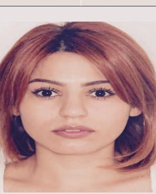

Education
PR Specialist
Armenian Center of PR
Development
2012 - 2013
Master's Degree in Banking
Management
Armenian State University of
Economics
2010 - 2012
Bachelor's Degree in
Economics and Management
of enterprises / in air
transport
State Engineering University
of Armenia
2010 - 2012
Lusine
Ohanjanyan
Ohanjanyan
ohanjanyanlusine@gmail.com
20/62 Artsakh Str., Yerevan
22 February, 1989
Work Experience
Marketing Coordinator
Nairian
2018 January - Present
SMM Specialist
Nikolyan
2017 October - 2018 February
Aram Nikolyan Representative
MADE Fashion Corner
2017 September - 2018 February
Senior Credit Specialist
Finca UCO
2009 July - 2018 January